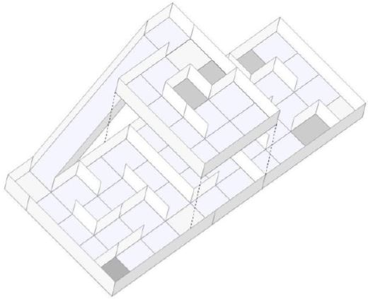

{kind=link}
{kind=link}

Questo documento mostra le tecniche usate per affrontare la competizione di robotica RESCUE B del 2014. Per creare il robot non è stato usato alcun kit già pronto, è stato progettato con l’ausilio di un software CAD 3D: Solidworks. Il robot è formato da 2 basi in policarbonato(plexiglass) spesso 5mm, possiede 2 ruote poste sulla parte anteriore e una ball caster posta sulla parte posteriore. E’ stato deciso di dividere le operazioni da svolgere in 2 Arduini, uno si occupa di far muovere il robot nel labirinto, l’altro invece rileva le fonti di calore ed il colore delle piastrelle.
L’obbiettivo di questo progetto è costruire un piccolo robot capace di muoversi all’interno di un labirinto, e di identificare delle fonti di calore(le “vittime”) che sono sparse lungo le pareti del labirinto.
La competizione si svolge in un arena a 2 piani costruita con quadrati di legno grandi circa 30x30cm. La posizione dei muri è sconosciuta, quindi il robot deve essere in grado di orientarsi tramite dei sensori di distanza. Alcune “vittime” sono posizionate casualmente sui muri che il robot deve identificare per acquistare punti, l’identificazione avviene tramite il lampeggio di un led per 5 secondi, inoltre và lanciato a terra un mattoncino(che rappresenta un kit di soccorso per la vittima). Alcune parti del pavimento sono nere, dove il robot non può transitare, può entrarci, ma deve uscirne dallo stesso lato da cui vi è entrato.

Il robot è costruito essenzialmente da due layer in policarbonato(Plexiglass) grandi 170x170mm, possiede due ruote 5.4(D)x2.0mm della Lynxmotion poste sulla parte anteriore, una ball caster posta sulla parte posteriore così il robot è in grado di muoversi facilmente nel labirinto. Sono stati usati due motori potenti(MG25D54L) con 9.4Kg/cm di coppia, rapporto di riduzione 75:1 e 130 rpm, che permettono al robot di muoversi velocemente anche nella parte in salita. Per tenere saldo l’albero dei motori alle ruote sono stati utilizzati mozzi da 4mm della Lynxmotion.
Siccome questi motori richiedono in stallo fino a 6A, sono stati utilizzati due driver L298 in parallelo per ciascun motore posti nella parte anteriore della base inferiore. E’ stata costruita una struttura apposita che sorregge i motori e li tiene attaccati alla pase inferiore. E’ presente un porta batteria sulla parte anteriore della base inferiore. Per identificare le vittime sono stati messi nei due lati della base inferiore due sensori termici MLX90614, protocollo di comunicazione utilizzato per leggere i valori di temperatura da questo sensore è l’I2C.
La base superiore e sorretta da 4 distanziatori da 50mm. Per rilevare buone misurazioni di distanza con i sensori ad infrarossi GP2Y0A21 è stato costruito un rialzo apposito posto al centro della base superiore.
E’ stato utilizzato pure un accelerometro ADXL345 per rilevare la salita e una bussola HMCL5883L per la precisione nel far girare il robot su se stesso di 90 o 180 gradi. I compiti da svolgere dal robot sono stati divisi in due unità separate che lavorano parallelamente, due Arduino UNO posti nella parte posteriore della base inferiore. Sono stati scelti gli Arduino UNO per il loro facile e veloce interfacciamento sensori di vario tipo. Per semplificare la cablatura sono state create due shield per gli Arduino contenenti le resistenze e i bus comuni a più sensori. Al centro della base superiore è stato fatto un grande foro 50x50mm che permette di far passare i jumper(cavetti) ai sensori posti sopra senza creare intralcio.
L’alimentazione viene fornita da una batteria LIPO a 3 celle da 7.4V 2200mA/h ricaricabile. In serie alla LIPO è presente un interruttore utilizzato per accendere e spegnere il robot.
Il primo Arduino si occupa di identificare la vittima, di segnalarla tramite il lampeggio di un led, di lanciargli un mattoncino affianco e di identificare le piastrelle nere.
Sono presenti 2 LED, il primo led è rosso ed è connesso all’alimentazione con in serie una resistenza da 570Ω per limitarne la corrente a 12mA, per segnalare che il robot è acceso. Il secondo è verde e viene utilizzato per segnalare la presenza di una vittima(fonte di calore) lampeggiando per 5 secondi, è collegato al piedino digitale 7 dell’Arduino con in serie una resistenza da 220 Ω per limitarne la corrente a 14mA.
Il sensore CNY70 è un sensore di tipo ottico. Al suo interno sono presenti un diodo emettitore ad infrarosso (che lavora su una lunghezza d'onda di 950 nm) ed un foto transistor. La distanza di lettura si aggira sui 0,3 mm. All'interno della capsula di questo sensore è montato un diodo LED che emette raggi infrarossi, invisibili all'occhio umano. Il diodo è dotato di due terminali, l'anodo (A) ed il catodo (K). Sulla stessa superficie è ubicato un foto transistor che ha la proprietà di condurre corrente fra l'emettitore (E) e il collettore (C), proporzionale alla quantità di luce che incide sulla base. Dato che sia l'emettitore sia il ricevitore dei raggi sono disposti sulla stessa superficie, è necessario che davanti ad entrambi sia presente una superficie riflettente, per fare in modo che il foto transistor possa ricevere i raggi che genera il led. La superficie riflettente deve essere situata a pochi millimetri da quella su cui sono montati emettitore e ricevitore, per far si che i raggi riflessi abbiano sufficiente intensità.

Il sensore di temperatura MLX90614, offre la possibilità di ottenere ottimi rilevamenti di temperatura. E’ contenuto in una breakout board che si occupa di gestire il sensore, e fornisce tramite interfacciamento con il bus I2C i valori di temperatura.
Il servo motore, comandato tramite PWM, viene utilizzato per far fuoriuscire un mattoncino dal suo contenitore, ovvero sgancia vicino alla “vittima” un “rescue kit” di salvataggio. Questo è possibile tramite un piccolo pistone auto costruito che mosso dal servo spinge il mattoncino. In figura si può notare il tubicino che contiene i mattoncini disposti uno sopra l’altro, alla sua base è inserito il pistoncino che viene mosso dal servomotore.

Il secondo Arduino si occupa di far girare il robot nel labirinto, ovvero rileva le misure di distanza e controlla i motori.
Sensore infrarossi in grado di rilevare un ostacolo in una distanza compresa tra 10 e 80 cm. Il sensore fornisce in uscita una tensione che varia in funzione della distanza. Per sapere la distanza rilevata è necessario interfacciare l'uscita ad un microcontrollore, ad un convertitore analogico-digitale oppure può essere collegata ad un comparatore per la rilevazione della soglia. Ideale per applicazioni nella robotica.
L’ADXL345 è un piccolo, sottile, a bassa potenza, accelerometro a 3 assi con alta risoluzione (13 bit) di misura fino a ± 16 g. I dati di uscita sono formattati a blocchi di 16 bit accessibili sia attraverso il bus SPI (a 3 o 4 fili) sia con l'interfaccia digitale I2C. L’ADXL345 è adatto per misurare l'accelerazione statica di gravità nelle applicazioni tilt-sensing.

L'HMC5883L è una bussola digitale a 3 assi dotata di interfaccia di comunicazione I2C. Non è incluso il regolatore di tensione per cui è necessario alimentare il sensore con una tensione continua tra 2.16 e 3.6V. E' incluso un condensatore di filtraggio sulla linea di alimentazione. Non è necessario usare resistenze di pull-up sul bus I2C perché sono già incluse nella scheda.

Sono stati utilizzati 2 motori MG25D54L HP della Pololu, le cui caratteristiche principali sono:
Quindi dato l’alto consumo di corrente sono stati usati 2 driver L298 in parallelo per motore.
Il pcb e gli schemi elettrici sono stati realizzati mediante l’utilizzo del software EAGLE. Sono state create due shield per semplificare il cablaggio senza avere un groviglio di cavetti, led e resistenze in aria.

// ARDUINO 1 SX
// Termici, Luminosita, Led Vittima, Led ON.
// IVANCICH STEFANO
// ITIS C. ZUCCANTE
// Rescue B 2014
// Ultima modifica: 04/04/2014
////////////// INCLUSIONE LIBRERIE ////////////////////////
#include <i2cmaster.h>
///////////// DICHIARAZIONE PIN ///////////////////////////
const int pinLuminosita=0;
const int pinLedVittima=7;
const int pinRX=0;
const int pinTX=1;
//////////// DICHIARAZIONE VARIABILI /////////////////////
float temp_celcius1;
float temp_celcius2;
const float tempMin=25; //<---------DA IMPOSTARE
const int campionamento=500; //<---------DA IMPOSTARE
//////////// IMPOSTAZIONI ////////////////////////////////
void setup(){
pinMode(pinLuminosita,INPUT);
pinMode(pinLedVittima,OUTPUT);
digitalWrite(pinLedVittima,LOW); //Spegne il ledVittima in casio sia acceso
pinMode(pinRX,OUTPUT);
pinMode(pinTX,OUTPUT);
digitalWrite(pinRX,LOW);
digitalWrite(pinTX,LOW);
//Serial.begin(9600);
//Serial.println("Setup...");
i2c_init(); //Initialise the i2c bus
PORTC = (1 << PORTC4) | (1 << PORTC5);//enable pullups
}
/////////// FUNZIONE PRINCIPALE //////////////////////////
void loop(){
//collaudo();
//segnalaVittima();
//testComunicazione();
//Serial.println(analogRead(pinLuminosita));
if(!ControllaNero()) comunicaNero(); // 0=nero
if(temp1()>tempMin) {
comunicaTermicoSX();
segnalaVittima();
}
if(temp2()>tempMin){
comunicaTermicoDX();
segnalaVittima();
}
digitalWrite(pinRX,LOW);
digitalWrite(pinTX,LOW);
//delay(campionamento);
}
//////////////// FUNZIONI DEL DISPOSITIVO /////////////////////
//---------COLLAUDO--------------------------
void collaudo(){
temp_celcius1=temp1();
Serial.print("TA: ");
Serial.print(temp_celcius1);
temp_celcius2=temp2();
Serial.print("\tTB: ");
Serial.print(temp_celcius2);
Serial.print("\tL: ");
Serial.println(ControllaNero()); //tcrt:nero = 0
digitalWrite(pinLedVittima,HIGH);
delay(100);
digitalWrite(pinLedVittima,LOW);
delay(500);
}
void testComunicazione(){
digitalWrite(pinRX,LOW);
digitalWrite(pinTX,LOW);
delay(1000);
digitalWrite(pinRX,LOW);
digitalWrite(pinTX,HIGH);
delay(1000);
digitalWrite(pinRX,HIGH);
digitalWrite(pinTX,LOW);
delay(1000);
digitalWrite(pinRX,HIGH);
digitalWrite(pinTX,HIGH);
delay(1000);
}
//--------------COMUNICAZIONE---------------------------------------
void comunicaNero(){
//Serial.println("Nero");
digitalWrite(pinRX,HIGH);
digitalWrite(pinTX,HIGH);
//delay(300);
}
void comunicaTermicoSX(){
//Serial.println("TermicoSX");
digitalWrite(pinRX,LOW);
digitalWrite(pinTX,HIGH);
//delay(1000);
}
void comunicaTermicoDX(){
//Serial.println("TermicoDX");
digitalWrite(pinRX,HIGH);
digitalWrite(pinTX,LOW);
}
//------------SEGNALA VITTIMA------------------------------------------
void segnalaVittima(){
for(int i=0;i<25;i++){ // 5 secondi ON/OFF
digitalWrite(pinLedVittima,HIGH);
delay(100);
digitalWrite(pinLedVittima,LOW);
delay(100);
digitalWrite(pinRX,LOW);
digitalWrite(pinTX,HIGH);
}
digitalWrite(pinRX,LOW);
digitalWrite(pinTX,LOW);
delay(3000); //Aspetta un po di piu per la sicronizzazione con l'altro arduino
}
//---------LUMINOSITA------------------------------------
//tcrt:nero = 0
int ControllaNero(){
int luminosita=0;
for(int i=0;i<10;i++) luminosita+=analogRead(pinLuminosita);
luminosita/=10;
if(luminosita>=300) return 1;
else return 0;
}
//-----------------TEMPERATURA-------------------------------------------
float temp1()
{
int dev = 0x5A<<1;
int data_low = 0;
int data_high = 0;
int pec = 0;
i2c_start_wait(dev+I2C_WRITE);
i2c_write(0x07);
// read
i2c_rep_start(dev+I2C_READ);
data_low = i2c_readAck(); //Read 1 byte and then send ack
data_high = i2c_readAck(); //Read 1 byte and then send ack
pec = i2c_readNak();
i2c_stop();
//This converts high and low bytes together and processes temperature, MSB is a error bit and is ignored for temps
double tempFactor = 0.02; // 0.02 degrees per LSB (measurement resolution of the MLX90614)
double tempData = 0x0000; // zero out the data
int frac; // data past the decimal point
// This masks off the error bit of the high byte, then moves it left 8 bits and adds the low byte.
tempData = (double)(((data_high & 0x007F) << 8) + data_low);
tempData = (tempData * tempFactor)-0.01;
float celcius = tempData - 273.15;
float fahrenheit = (celcius*1.8) + 32;
return(celcius);
}
float temp2()
{
int dev = 0x5B<<1;
int data_low = 0;
int data_high = 0;
int pec = 0;
i2c_start_wait(dev+I2C_WRITE);
i2c_write(0x07);
// read
i2c_rep_start(dev+I2C_READ);
data_low = i2c_readAck(); //Read 1 byte and then send ack
data_high = i2c_readAck(); //Read 1 byte and then send ack
pec = i2c_readNak();
i2c_stop();
//This converts high and low bytes together and processes temperature, MSB is a error bit and is ignored for temps
double tempFactor = 0.02; // 0.02 degrees per LSB (measurement resolution of the MLX90614)
double tempData = 0x0000; // zero out the data
int frac; // data past the decimal point
// This masks off the error bit of the high byte, then moves it left 8 bits and adds the low byte.
tempData = (double)(((data_high & 0x007F) << 8) + data_low);
tempData = (tempData * tempFactor)-0.01;
float celcius = tempData - 273.15;
float fahrenheit = (celcius*1.8) + 32;
return(celcius);
}
// ARDUINO 2 DX
// Accelerometro, Bussola, Motori, Infrarossi, servo.
// IVANCICH STEFANO
// ITIS C. ZUCCANTE
// Rescue B 2014
// Ultima modifica: 06/04/2014 23.45
////////////// INCLUSIONE LIBRERIE ////////////////////////
#include "Wire.h"
#include "ADXL345.h"
#include "I2Cdev.h"
#include "HMC5883L.h"
#include <Servo.h>
///////////// DICHIARAZIONE PIN ///////////////////////////
const int MotSxA=8; // Motore SX A
const int MotSxB=9; // Motore SX B
const int MotDxA=10; // Motore DX A
const int MotDxB=11; // Motore DX B
const int com0=0; // Comunicazione0
const int com1=1; // Comunicazione1
const int infraSX=0; // Analog
const int infraDavanti=1; // Analog
const int infraDX=2; // Analog
//////////// DICHIARAZIONE VARIABILI e COSTATNTI /////////////////////
const float alpha = 0.5;
double fXg = 0;
double fYg = 0;
double fZg = 0;
const float distanzaMuro=20; //<---------DA IMPOSTARE
const float distanzaMuroDavanti=24; //<---------DA IMPOSTARE
const float pendenzaSalita=20; //<---------DA IMPOSTARE
const int normale_dx=110; //<---------DA IMPOSTARE
const int normale_sx=110; //<---------DA IMPOSTARE
//Pid:
const int pwmNorm=110; //<---------DA IMPOSTARE
const float kPid=4; //<---------DA IMPOSTARE
//GiraDX
const int veloce_sx=255; //<---------DA IMPOSTARE
const int lento_dx=0; //<---------DA IMPOSTARE
const int tempo_dx=725; //<---------DA IMPOSTARE
//GiraSX
const int veloce_dx=255; //<---------DA IMPOSTARE
const int lento_sx=0; //<---------DA IMPOSTARE
const int tempo_sx=740; //<---------DA IMPOSTARE
//Indietro Nera
const int tempo_Indietro=500; //<---------DA IMPOSTARE
//Gira 180
const int giro_sx=15;
const int giro_dx=255;
const int tempo_giro=350;
//////////// IMPOSTAZIONI ////////////////////////////////
HMC5883L mag;
ADXL345 acc;
int16_t mx, my, mz;
Servo myservo; // create servo object to control a servo
void setup(){
Wire.begin(); // I2C
acc.begin(); // Accelerometro
// PIN MOTORI:
pinMode(MotSxA, OUTPUT); // Motore SX A
pinMode(MotSxB, OUTPUT); // Motore SX B
pinMode(MotDxA, OUTPUT); // Motore DX A
pinMode(MotDxB, OUTPUT); // Motore DX B
// PIN COMUNICAZIONE
pinMode(com0, INPUT); // Comunicazione0
pinMode(com1, INPUT); // Comunicazione0
// Servo
//myservo.attach(6);
//myservo.write(180);
//Serial.begin(9600);
// initialize device
//Serial.println("Initializing I2C devices...");
mag.initialize(); // Inizializza
// verify connection
//Serial.println("Testing device connections...");
//Serial.println(mag.testConnection() ? "HMC5883L connection successful" : "HMC5883L connection failed");
delay(100);
}
/////////// FUNZIONE PRINCIPALE //////////////////////////
void loop(){
//collaudo();
//testComunicazione();
//continuaDritto();
//tieniDestra();
//vicoloCieco();
//Vittima();
//AVANTI();
//AVANTIPID();
//SINISTRA();
//DESTRA();
//FERMO();
//SALITA();
//delay(5000);
if(digitalRead(com1)==LOW && digitalRead(com0)==LOW){
if(pendenza()>pendenzaSalita) SALITA();
else tieniDestra();
}
if(digitalRead(com1)==LOW && digitalRead(com0)==HIGH)Vittima();
if(digitalRead(com1)==HIGH && digitalRead(com0)==LOW)Vittima();
if(digitalRead(com1)==HIGH && digitalRead(com0)==HIGH)Nero();
}
///////STRATEGIA//////////////////////////////
void tieniDestra(){
/* distanza 0-->SX
1-->DAVANTI
2-->DX */
if(distanza(2)>distanzaMuro){
DESTRA();
pocoIndietro();
pocoAvanti();
}
else if(distanza(1)>distanzaMuroDavanti) AVANTIPID();
else if(distanza(0)>distanzaMuro){
SINISTRA();
pocoIndietro();
pocoAvanti();
}
else vicoloCieco();
}
void continuaDritto(){
/* distanza 0-->SX
1-->DAVANTI
2-->DX */
//if(distanza(1)>distanzaMuro) AVANTI();
if(distanza(1)>distanzaMuroDavanti) AVANTI();
else if(distanza(2)>distanzaMuro){
DESTRA();
if(distanza(1)>distanzaMuroDavanti){
AVANTIPID();
delay(500);
}
}
else if(distanza(0)>distanzaMuro) SINISTRA();
else pocoIndietro();
}
void Vittima(){
FERMO();
myservo.write(0);
delay(1000);
myservo.write(180);
delay(6000);
}
void Nero(){
pocoIndietro();
FERMO();
digitalWrite(MotSxA,15); //sinistro antiorario
analogWrite(MotSxB,LOW);
analogWrite(MotDxA,255); //destro orario
digitalWrite(MotDxB,LOW);
delay(725);
//delay(500);
FERMO();
/*INDIETRO();
delay(tempo_Indietro);*/
}
//////////////// FUNZIONI DEL DISPOSITIVO /////////////////////
//---------COLLAUDO--------------------------
void collaudo(){
Serial.print("Salita: ");
Serial.print(pendenza());
/*Serial.print("\t Bussola: ");
Serial.println(bussola());*/
Serial.print("\tSX: ");
Serial.print(distanza(0));
Serial.print("\tDAV: ");
Serial.print(distanza(1));
Serial.print("\tDX: ");
Serial.println(distanza(2));
myservo.write(0);
delay(500);
myservo.write(180);
delay(500);
}
//--------------COMUNICAZIONE---------------------------------------
void testComunicazione(){
if(digitalRead(com1)==LOW && digitalRead(com0)==LOW)AVANTI();
if(digitalRead(com1)==LOW && digitalRead(com0)==HIGH)DESTRA();
if(digitalRead(com1)==HIGH && digitalRead(com0)==LOW)SINISTRA();
if(digitalRead(com1)==HIGH && digitalRead(com0)==HIGH)FERMO();
}
//--------------INFRAROSSI--------------------------------------------
float distanza(int numero){
/* distanza 0-->SX
1-->DAVANTI
2-->DX */
float dist=0;
for(int i=0; i<10; i++){
dist+=4800/(analogRead(numero)-20);
}
dist/=10;
if(dist<0 || dist>30) return 100;
else return dist;
}
//-------------MOTORI----------------------------------------------
void pocoAvanti(){
while(distanza(1)>distanzaMuroDavanti){
AVANTI();
delay(500);
}
}
void pocoIndietro(){
INDIETRO();
delay(500);
}
void vicoloCieco(){
AVANTI();
delay(200);
//Sinistra
digitalWrite(MotSxA,giro_sx); //sinistro antiorario
analogWrite(MotSxB,LOW);
analogWrite(MotDxA,giro_dx); //destro orario
digitalWrite(MotDxB,LOW);
delay(tempo_giro);
FERMO();
delay(1000);
if(digitalRead(com1)==LOW && digitalRead(com0)==HIGH)Vittima();
if(digitalRead(com1)==HIGH && digitalRead(com0)==LOW)Vittima();
digitalWrite(MotSxA,giro_sx); //sinistro antiorario
analogWrite(MotSxB,LOW);
analogWrite(MotDxA,giro_dx); //destro orario
digitalWrite(MotDxB,LOW);
delay(tempo_giro);
pocoIndietro();
//Ripeti
}
void AVANTI()
{
digitalWrite(MotSxA, LOW); // sinistro antiorario
analogWrite(MotSxB, normale_sx);
analogWrite(MotDxA, normale_dx); // destro orario
digitalWrite(MotDxB, LOW);
}
void DESTRA()
{
digitalWrite(MotSxA, LOW); //sinistro antiorario
analogWrite(MotSxB, veloce_sx);
//analogWrite(MotDxA, lento_dx); //destro orario
//digitalWrite(MotDxB, LOW);
digitalWrite(MotDxA, LOW);
digitalWrite(MotDxB, lento_dx);
delay(tempo_dx);
}
void SINISTRA()
{
//digitalWrite(MotSxA,LOW); //sinistro antiorario
//analogWrite(MotSxB,lento_sx);
digitalWrite(MotSxA,lento_sx); //sinistro antiorario
analogWrite(MotSxB,LOW);
analogWrite(MotDxA,veloce_dx); //destro orario
digitalWrite(MotDxB,LOW);
delay(tempo_sx);
}
void INDIETRO()
{
digitalWrite(MotSxA, normale_sx-20); // sinistro orario
analogWrite(MotSxB,HIGH);
analogWrite(MotDxA,HIGH); // destro antiorario
digitalWrite(MotDxB, normale_dx-20);
}
void FERMO()
{
digitalWrite(MotSxA,LOW);
analogWrite(MotSxB,LOW);
analogWrite(MotDxA,LOW);
digitalWrite(MotDxB,LOW);
}
void SALITA(){
digitalWrite(MotSxA, LOW); // sinistro
analogWrite(MotSxB, 255);
analogWrite(MotDxA, 255); // destro orario
digitalWrite(MotDxB, LOW);
}
void AVANTIPID()
{
float distSX=distanza(0);
float distDX=distanza(2);
float errore=distSX-distDX;
//if(distSX>distanzaMuro)errore=(13-distDX)*2; // Se non ce il muro SX
//if(distDX>distanzaMuro)errore=(distSX-13)*2; // Se non ce il muro DX
int pwmPid=pwmNorm+(abs(errore)*kPid);
if(distSX>distanzaMuro||distDX>distanzaMuro)AVANTI();
else if(errore>0){ //>0 +DX(ruota a sinistra)
digitalWrite(MotSxA, LOW); // sinistro antiorario
analogWrite(MotSxB, pwmNorm);
analogWrite(MotDxA, pwmPid); // destro orario
digitalWrite(MotDxB, LOW);
}
else if(errore<0){ //<0 +SX(ruota a destra)
digitalWrite(MotSxA, LOW); // sinistro antiorario
analogWrite(MotSxB, pwmPid);
analogWrite(MotDxA, pwmNorm); // destro orario
digitalWrite(MotDxB, LOW);
}
}
void SALITAPID(){
float distSX=distanza(0);
float distDX=distanza(2);
float errore=distSX-distDX;
int pwmPid=240+(abs(errore)*kPid);
if(pwmPid>255)pwmPid=255;
if(errore>0){ //>0 +DX(ruota a sinistra)
digitalWrite(MotSxA, LOW); // sinistro antiorario
analogWrite(MotSxB, 240);
analogWrite(MotDxA, pwmPid); // destro orario
digitalWrite(MotDxB, LOW);
}
else if(errore<0){ //<0 +SX(ruota a destra)
digitalWrite(MotSxA, LOW); // sinistro antiorario
analogWrite(MotSxB, pwmPid);
analogWrite(MotDxA, 240); // destro orario
digitalWrite(MotDxB, LOW);
}
}
//-------------ACCELEROMETRO--------------------------------------
float pendenza(){
double pitch, roll, Xg, Yg, Zg;
acc.read(&Xg, &Yg, &Zg);
//Low Pass Filter to smooth out data
fXg = Xg * alpha + (fXg * (1.0 - alpha));
fYg = Yg * alpha + (fYg * (1.0 - alpha));
fZg = Zg * alpha + (fZg * (1.0 - alpha));
//Roll and Pitch Equations
roll = (atan2(-fYg, fZg)*180.0)/M_PI;
pitch = (atan2(fXg, sqrt(fYg*fYg + fZg*fZg))*180.0)/M_PI;
return roll; //<---------- OPPURE ROLL/PITCH DIENDE COME POSIZIONIAMO IL SENSORE
}
//----------BUSSOLA-------------------------------
float bussola(){
// read raw heading measurements from device
mag.getHeading(&mx, &my, &mz);
// To calculate heading in degrees. 0 degree indicates North
float heading = atan2(my, mx);
if(heading < 0) heading += 2 * M_PI;
float gradi=heading * 180/M_PI;
return gradi;
}

Sarebbe stato meglio utilizzare 4 ruote, magari di tipo mechanum wheels, che offrono una precisione molto buona nel far girare il robot di 90 gradi. La ball caster inoltre fa incastrare il robot negli ostacoli. Era presente una versione dei motori che consumava meno di meno: 75 rpm, 80mA in free running, coppia di 6.1Kg/cm e 2.2A in stallo che confronto ai 6A di quelli utilizzati è molto meglio. Questa ci avrebbe permesso un minore consumo della batteria che ha creato grossi problemi durante le gare, visto che dopo un turno dentro il labirinto la batteria era scarica, e si doveva utilizzarne un'altra, ricalibrando i valori di velocità dei motori. Lo sgancia mattoncini ed il servomotore sono stati aggiunti qualche giorno prima della gara nazionale, perché il regolamento non era molto chiaro, per questo negli schemi elettrici, nel rendering 3D e in diverse foto non compaiono.
{kind=link}